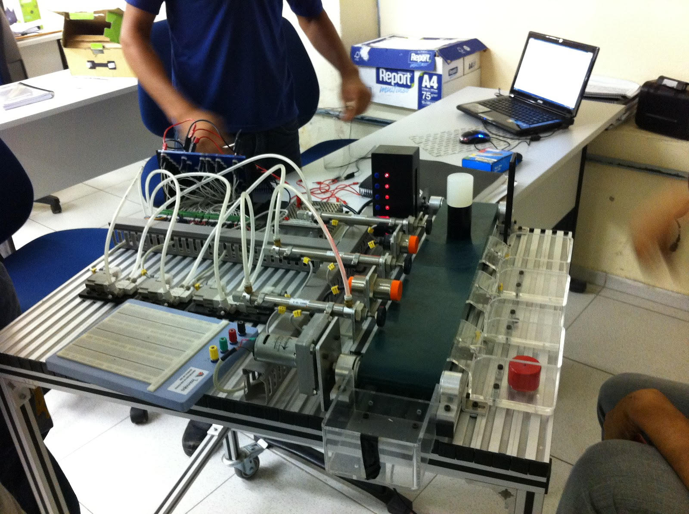
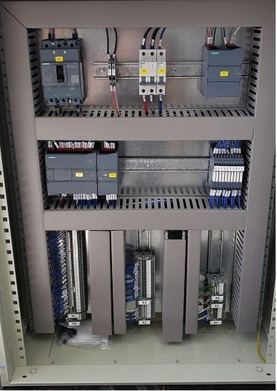
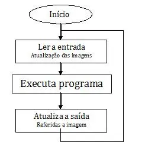
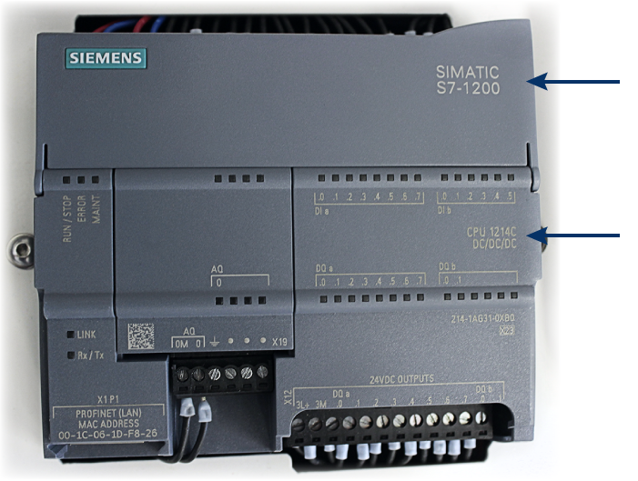

Conceitos e Teoria do CLP
Entenda o funcionamento interno, arquitetura, tipos de memória e módulos de E/S dos Controladores Lógicos Programáveis.
O que é um CLP?

O CLP (Controlador Lógico Programável) é um computador industrial projetado para automatizar processos produtivos e máquinas. Ele atua como o cérebro da automação, substituindo antigos painéis de relés por um sistema flexível e reconfigurável via software.
Aplicações do CLP na Indústria
Os CLPs estão presentes em diversos setores produtivos devido à sua alta confiabilidade:
- Indústria Automobilística: Controle de braços robóticos em linhas de solda, pintura e montagem.
- Sistemas de Embalagem e Envase: Controle de esteiras, dosagem de líquidos e etiquetagem.
- Tratamento de Água: Automação de bombas, controle de fluxo e nível de reservatórios.
- Refrigeração Industrial: Controle de temperatura e pressão em câmaras frigoríficas.


Ciclo de Operação do PLC (Scan Cycle)
O CLP executa suas tarefas continuamente em um ciclo fechado de 3 etapas:
- 1. Leitura das Entradas: Lê o estado dos sensores e botões conectados às portas físicas.
- 2. Execução do Programa: Processa a lógica de programação criada pelo usuário linha por linha.
- 3. Atualização das Saídas: Envia comandos elétricos para acionar motores, válvulas e atuadores.

Sistema de Memória do CLP
- Memória de Programa (Flash/ROM): Armazena o código escrito pelo usuário. Não se apaga ao desligar.
- Memória de Dados (RAM): Guarda valores temporários como contadores, temporizadores e variáveis.
- Imagem de Entradas e Saídas (PII / PIO): Espelha instantaneamente os sinais elétricos dos Bornes físicos.
Organização da Memória: Bit, Byte e Word
| Tipo | Tamanho | Descrição e Exemplo |
|---|---|---|
| Bit | 1 bit | Estados Ligado/Desligado (0 ou 1). Ex: Botão Pressionado. |
| Byte | 8 Bits | Conjunto de 8 bits. Valores inteiros de 0 a 255. |
| Word | 16 Bits | Utilizada para leitura de sensores analógicos de precisão. |
| DWord | 32 Bits | Usada para contagens elevadas ou números decimais (ponto flutuante). |
Módulos de Entrada e Saída (I/O)
- Entradas/Saídas Digitais: Tratam sinais do tipo LIGADO/DESLIGADO (0V ou 24V DC). Ex: Chaves, botões e contatores.
- Entradas/Saídas Analógicas: Tratam variações contínuas de tensão ou corrente (ex: 0-10V ou 4-20mA). Ex: Sensores de temperatura e inversores.
